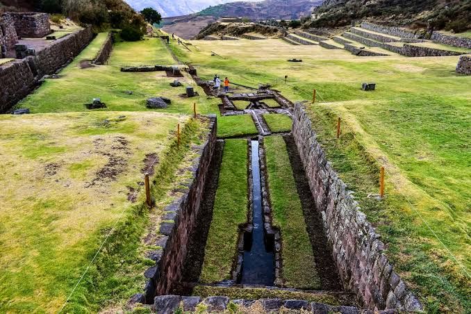
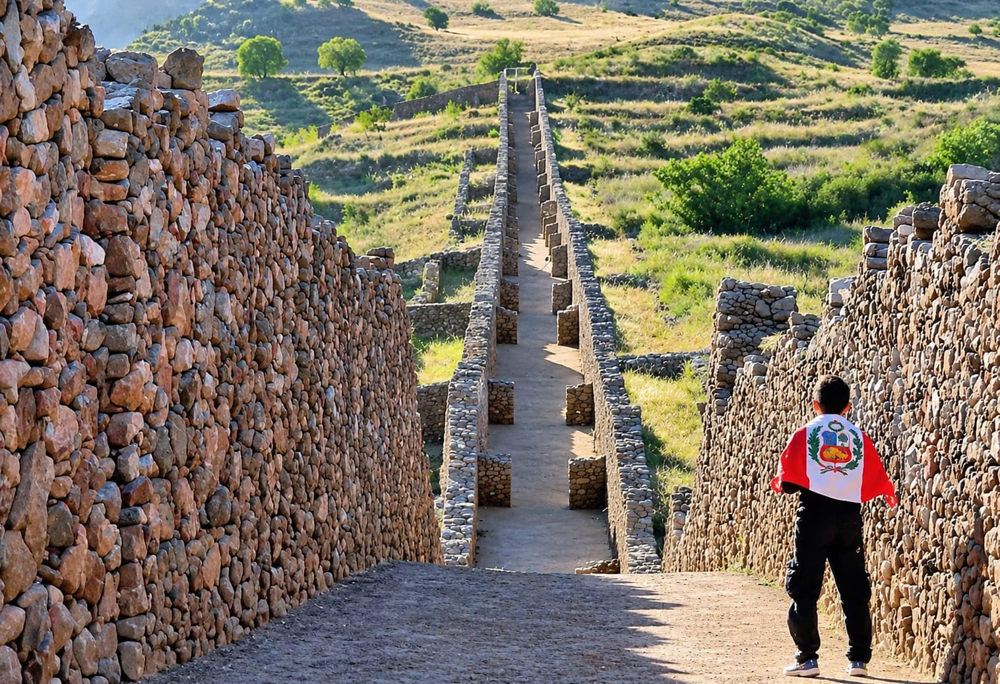
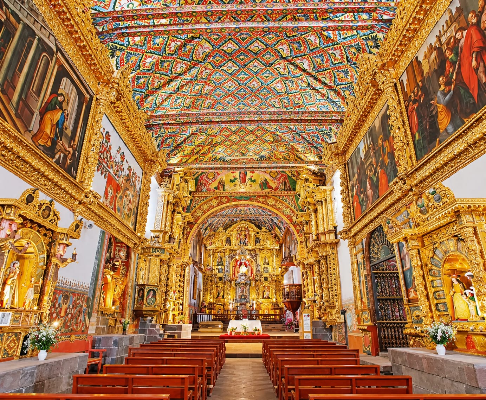

NATA SIGNATURE EXPERIENCE
Valle Sur
Un recorrido por el patrimonio arqueológico, histórico y religioso del sur de Cusco, acompañado por paisajes y expresiones culturales locales.
Itinerario
08:15
Recojo en hoteles del centro histórico de Cusco.
08:40
Salida hacia el Valle Sur.
09:30
Plaza de Tipón Choquepata: visita a la galería y exposición fotográfica.
11:00
Visita al Centro Arqueológico de Tipón.
12:00
Visita al complejo arqueológico de Pikillaqta.
13:00
Visita a la Iglesia de Andahuaylillas.
Después de la visita
Box lunch incluido.
14:00
Retorno hacia Cusco.
15:30
Llegada aproximada a los hoteles del centro histórico.
Qué incluye
- Transporte turístico.
- Recojo y retorno a hoteles del centro histórico de Cusco.
- Guía profesional en el idioma solicitado, sujeto a disponibilidad y cotización.
- Box lunch.
- Asistencia personalizada.
Qué no incluye
- Entradas a los atractivos turísticos (opción de adquirirlas como adicional).
- Gastos personales.
- Servicios no especificados como incluidos.
Recomendaciones para el viajero
Para disfrutar del recorrido por el Valle Sur, recomendamos llevar:
- Bloqueador solar, gorra y lentes de sol; el sol en el Valle Sur puede ser intenso.
- Casaca ligera o cortaviento, ya que a veces hay viento.
- Agua.
- Zapatillas cómodas; en Tipón se camina bastante.
- Poncho para lluvias.
- Dinero en efectivo.
- DNI o pasaporte.
- Una mochila pequeña para llevar estos artículos.
Personaliza tu experiencia
Consulta por la modalidad privada o compartida y por la disponibilidad de guía en español, inglés, francés o chino mandarín.
Una mirada a la experiencia



Descubre el Valle Sur con NATA
Solicita disponibilidad y coordina tu experiencia.
Solicitar información